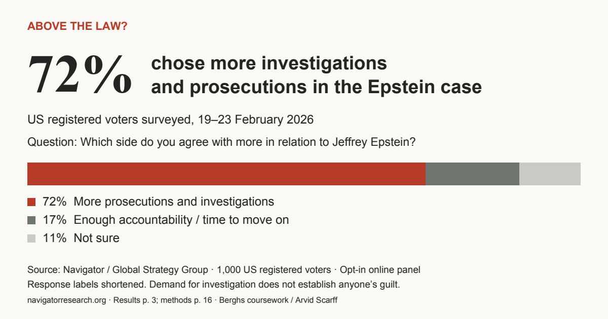

02 / Content & storytelling
Content plan
and article.
A content plan for reaching journalists, a chart-led article, and sample email and LinkedIn copy.
{kind=link}

Work / Berghs / Growth Toolbox
Berghs assignments in data investigation, content, scraping and APIs.
01 / Data investigation
What does demand for accountability look like beyond a poll?
72% of surveyed US registered voters chose more investigations and prosecutions in the Epstein case in February 2026. The investigation places that finding alongside earlier recorded protest activity, with sources and downloadable data.
The protest records are from 2025 and mostly concern disclosure, not explicit prosecution. They cannot show whether the surveyed voters protested. The comparison raises a question; it does not measure a conversion from opinion to action.
02 / Content & storytelling
A content plan for reaching journalists, a chart-led article, and sample email and LinkedIn copy.

03 / Scraping
A JavaScript and Cheerio scraper that extracts company records from five Allabolag search pages for architects and exports them as TXT and CSV.
The saved export contains 125 rows and 122 unique organisation numbers. Three extra rows are exact duplicates; phone numbers are absent in 22 rows and addresses in seven. The original order, duplicates and empty cells are preserved.
The scraper and method are available below. The company/contact dataset is not published.
The method note describes the full dataset and export format. Check the source’s access rules before running the scraper.
04 / API mashup
A cheap flight is good.
A reason to go is better.
A working prototype connecting affordable return flights with nearby music festivals. It combines travel and event data rather than acting as a booking service. Live coverage depends on the providers; demo results are labelled.
05 / Portfolio website
A static portfolio bringing together interactive projects, data work and earlier graphic design. Built with HTML, CSS and JavaScript, with responsive layouts and keyboard navigation.